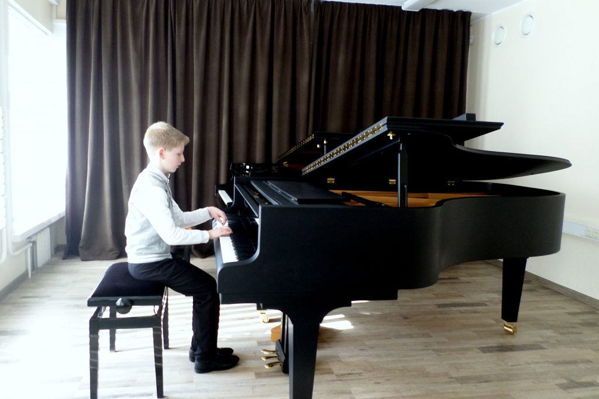

fortepijonas - išsamiai DELFI.lt
 Spalio 29 d., ketvirtadienis | Vilnius 12 Kaunas 11 Klaipėda 12 Šiauliai 9 Panevėžys 11 Alytus 12 Nida 10 Raseiniai 9 Utena 11 Mažeikiai 9 Biržai 11 Kėdainiai 11 Kiti miestai Paieška | Pranešti naujieną | LT RU EN | Reklama Kontaktai | Statistika | + Apie Delfi plius Prisijungti Naujausios Skaitomiausios Lietuvoje Sportas Orai Kriminalai Užsienyje Veidai Horoskopai Gyvenimas Mokslas Verslas Daugiau Sveikata Kultūra Auto M360 Politiko akimis Jaunimas Pilietis Nuomonių ringas Multimedija Teisė Medijos Karas Propaganda PT Melo detektorius Demaskuok Ačiū už pamokas Temos | Delfi VideoNaujienos
Naujausios Skaitomiausios Lietuvoje Sportas Kriminalai Užsienyje Veidai GyvenimasVerslas Mokslas Kultūra Sveikata Auto Pilietis Miestai M360 Politiko akimis
Delfi Video
Tiesioginės transliacijos Delfi Diena Delfi Dėmesio centre LaidosNaudinga
Orai Horoskopai Receptai TV Programa Valiutų kursaiDelfi projektai
Multimedija Idėja Lietuvai Kablys Smalsūs EP Atsakingas požiūris Atgal į gyvenimąDelfi kanalai
Agro Būstas Moterys Šeima Kelionės Grynas Stilius Maistas Letena Karjera Bored Panda Sek DelfiMobilusis Delfi
Naujausios žinios Naujienų temos Delfi Temos fortepijonas
fortepijonas
Fortepijonas – klavišinis muzikos instrumentas, dažniausiai naudojamas koncertams. Jo vibratorius – stygos. Kad stygos pasidarytų tamprios, reikia jas iš anksto viena kryptimi įtempti. Fortepijonas išsiskiria dideliu diapazonu, turtingu tembru ir judria skambesio dinamika.
Iš palikuonio lūpų – apie garsiąją Ptašekų knygininkų ir medikų dinastiją, rūpesčio geną, žydišką auklėjimą ir Paliesiaus dvaro aurą (21)
„Kaip dabar atsimenu: tėvas pasisodino mane paauglį virtuvėje prie stalo ir pasakė: „Tiesiog galvok. Išmok galvoti“. Iki dabar atsimenu šiuos jo...
Amžinybės prieangis arba gyvenimas miške: bandymas įminti Mikalojaus Konstantino Čiurlionio užduotą mįslę
Jau seniai atleidau Viešpačiui, kad improvizuodamas sukūrė žmogų netobulą. Svarsčiau, gal išvargintas kūrybinio darbo per neapsižiūrėjimą...
„Fortepijonas“ – geriausias moters režisierės sukurtas filmas istorijoje: pamatykite jį „Skalvijos“ kino centre (4)
Kino kūrėja Jane Campion – pirmoji ir iki šiol vienintelė režisierė moteris, Kanų kino festivalyje apdovanota „Auksine palmės šakele“....
Kintų muzikos festivalis savaitgalį dedikuoja Beethovenui ir Lietuvos žydų istorijai
Kintų muzikos festivalyje – įgarsintų progų savaitgalis. Ketvirtadienį (liepos 30 d.) nuskambės Ludwigo van Beethoveno 250-osioms gimimo metinėms...
Kaip skambės ateities muzika? (7)
Gyvename beprotiškai gretai pirmyn judančiame pasaulyje. Globalizacija, besiplečiančios virtualios realybės galimybės keičia ir veikia mūsų...